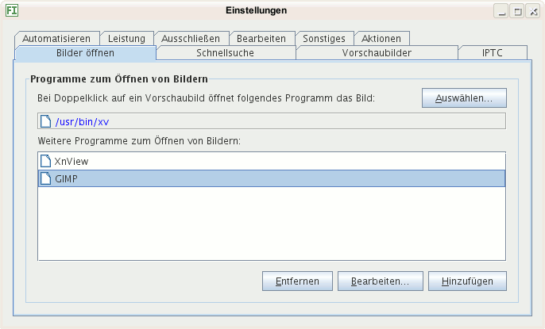
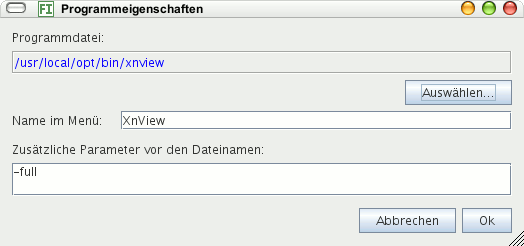

Wählen Sie ein Programm aus durch Klick auf die Schaltfläche Programm auswählen, das bei Doppelklick auf ein Vorschaubild die Original-Bilddatei öffnen soll. Das kann ein Bildbetrachter sein oder eine Bildbearbeitung.
Hier können Sie mehrere Programme hinzufügen, die zum Öffnen von Bildern angeboten werden vom Kontextmenü im Fenster mit den Vorschaubildern.

Sie können das gleiche Programm mehrmals eintragen mit verschiedenen Aufrufparametern. Alle Parameter werden beim Programmaufruf vor die Namen der Bilddateien geschrieben. Die Abbildung unten zeigt ein Beispiel: Mit dem Parameter -full zeigt das Programm xnview die Bilder den Bildschirm ausfüllend an.

Tipp: Sie können das Programm Bilder erweitern, beispielsweise indem Sie von anderen Programmen eine Diaschau anzeigen lassen oder Bilder bearbeiten, z.B. drehen.